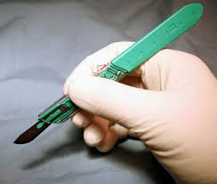

Stethoscope
Used to listen to heart and lung sounds.
Surgical Table Light
Provides bright, shadow-free illumination during surgeries for better visibility.
Sphygmomanometer
Used to check blood pressure levels.
Otoscope
Examines the ear canal and eardrum for infection.
Laryngoscope
Used to see the larynx and vocal cords clearly.

Surgical Drill
Used to bore holes in bone during orthopedic and brain surgeries.
Forceps
Grasping tool used for holding tissues during procedures.

Scalpel
Small, sharp blade used to make incisions during surgery.